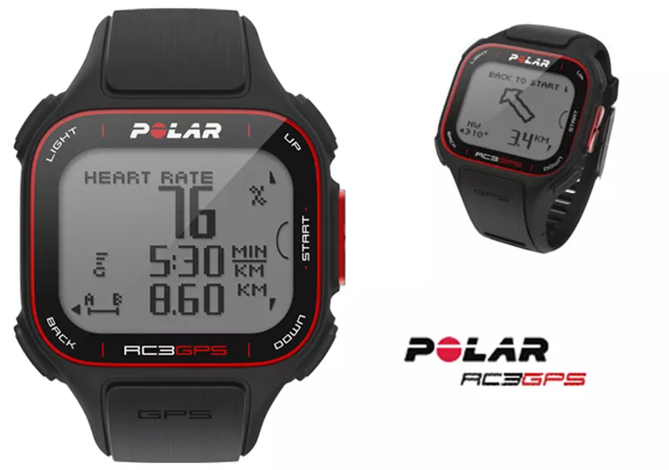
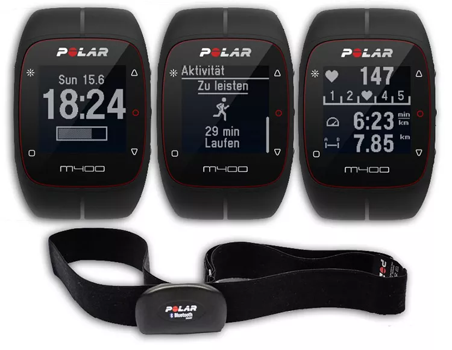

Наши сотрудники всегда готовы
поделиться своим опытом,
так как сами бегают полумарафоны, переплыли Босфор, готовятся к соревнованиям по триатлону!
Мы работаем для того,
чтобы Ваши занятия спортом шли на пользу Вашему здоровью и были в радость Вам и Вашим близким!
Помогаем с обучением
правильной технике бега!
Дружим с крупнейшей школой бега в России - I LOVE RUNNING.